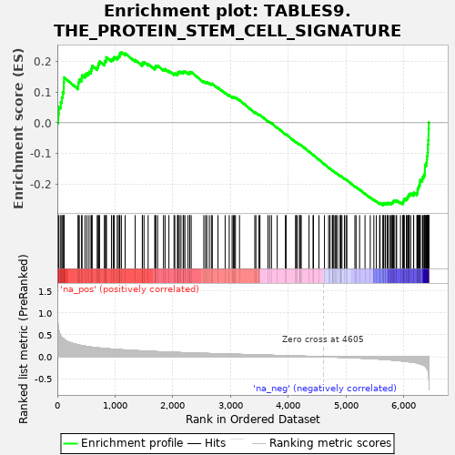
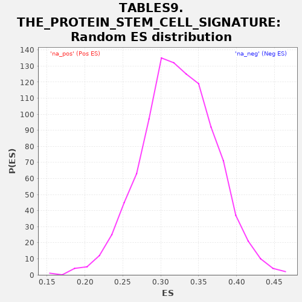

| | | Dataset | al10_v_al5 |
| Phenotype | NoPhenotypeAvailable |
| Upregulated in class | na_neg |
| GeneSet | TABLES9.THE_PROTEIN_STEM_CELL_SIGNATURE |
| Enrichment Score (ES) | -0.27008155 |
| Normalized Enrichment Score (NES) | NaN |
| Nominal p-value | NaN |
| FDR q-value | 1.0 |
| FWER p-Value | 0.0 |
Table: GSEA Results Summary

Fig 1: Enrichment plot: TABLES9.THE_PROTEIN_STEM_CELL_SIGNATURE
Profile of the Running ES Score & Positions of GeneSet Members on the Rank Ordered List
| PROBE | GENE SYMBOL | GENE_TITLE | RANK IN GENE LIST | RANK METRIC SCORE | RUNNING ES | CORE ENRICHMENT | | 1 | Stmn1 | | | 17 | 0.711 | 0.0274 | No |
| 2 | Esco2 | | | 28 | 0.600 | 0.0512 | No |
| 3 | Hells | | | 59 | 0.491 | 0.0672 | No |
| 4 | Uhrf1 | | | 78 | 0.443 | 0.0831 | No |
| 5 | Nusap1 | | | 93 | 0.431 | 0.0991 | No |
| 6 | Mcm5 | | | 111 | 0.416 | 0.1140 | No |
| 7 | Incenp | | | 113 | 0.414 | 0.1314 | No |
| 8 | Dtl | | | 116 | 0.409 | 0.1484 | No |
| 9 | Ckap2 | | | 360 | 0.275 | 0.1212 | No |
| 10 | Mcm3 | | | 364 | 0.274 | 0.1323 | No |
| 11 | Ttk | | | 380 | 0.269 | 0.1413 | No |
| 12 | Pmf1 | | | 420 | 0.256 | 0.1459 | No |
| 13 | Cdk4 | | | 428 | 0.255 | 0.1556 | No |
| 14 | Aqp4 | | | 479 | 0.243 | 0.1579 | No |
| 15 | Nup210 | | | 513 | 0.236 | 0.1626 | No |
| 16 | Ccnb1 | | | 549 | 0.227 | 0.1666 | No |
| 17 | Pou2f1 | | | 583 | 0.222 | 0.1707 | No |
| 18 | Chek2 | | | 593 | 0.220 | 0.1786 | No |
| 19 | Rad50 | | | 603 | 0.218 | 0.1864 | No |
| 20 | Mcm7 | | | 690 | 0.204 | 0.1813 | No |
| 21 | Rpa2 | | | 707 | 0.203 | 0.1873 | No |
| 22 | Senp1 | | | 715 | 0.202 | 0.1947 | No |
| 23 | Mcm6 | | | 731 | 0.200 | 0.2008 | No |
| 24 | Cdca5 | | | 816 | 0.188 | 0.1953 | No |
| 25 | Nrm | | | 821 | 0.188 | 0.2027 | No |
| 26 | Tcof1 | | | 847 | 0.185 | 0.2065 | No |
| 27 | Psip1 | | | 848 | 0.185 | 0.2143 | No |
| 28 | Cps1 | | | 937 | 0.177 | 0.2077 | No |
| 29 | Mcm4 | | | 967 | 0.174 | 0.2104 | No |
| 30 | Pola2 | | | 984 | 0.172 | 0.2151 | No |
| 31 | Mcm2 | | | 1037 | 0.168 | 0.2139 | No |
| 32 | Cnn3 | | | 1058 | 0.166 | 0.2177 | No |
| 33 | Hmgb3 | | | 1080 | 0.163 | 0.2213 | No |
| 34 | Hmgn1 | | | 1082 | 0.163 | 0.2280 | No |
| 35 | Rtn4 | | | 1109 | 0.161 | 0.2307 | No |
| 36 | Nfic | | | 1174 | 0.155 | 0.2270 | No |
| 37 | Pck2 | | | 1348 | 0.142 | 0.2054 | No |
| 38 | Parp1 | | | 1471 | 0.133 | 0.1915 | No |
| 39 | Bclaf1 | | | 1474 | 0.132 | 0.1968 | No |
| 40 | Clic4 | | | 1501 | 0.130 | 0.1981 | No |
| 41 | Apex1 | | | 1572 | 0.127 | 0.1923 | No |
| 42 | Arsb | | | 1687 | 0.119 | 0.1791 | No |
| 43 | Cbx3 | | | 1696 | 0.119 | 0.1829 | No |
| 44 | Mif | | | 1704 | 0.118 | 0.1868 | No |
| 45 | Nfib | | | 1736 | 0.116 | 0.1868 | No |
| 46 | Kif20a | | | 1838 | 0.110 | 0.1753 | No |
| 47 | Zfpm1 | | | 1865 | 0.109 | 0.1758 | No |
| 48 | Chchd6 | | | 1932 | 0.106 | 0.1697 | No |
| 49 | Paics | | | 2020 | 0.102 | 0.1601 | No |
| 50 | Nsmce2 | | | 2034 | 0.101 | 0.1623 | No |
| 51 | Tbc1d4 | | | 2080 | 0.099 | 0.1593 | No |
| 52 | Phip | | | 2089 | 0.098 | 0.1621 | No |
| 53 | Brd8 | | | 2091 | 0.098 | 0.1661 | No |
| 54 | Dnajc9 | | | 2112 | 0.097 | 0.1670 | No |
| 55 | Kcnq1 | | | 2141 | 0.095 | 0.1666 | No |
| 56 | Macrod1 | | | 2179 | 0.093 | 0.1646 | No |
| 57 | Hddc2 | | | 2187 | 0.093 | 0.1674 | No |
| 58 | Gins4 | | | 2209 | 0.092 | 0.1680 | No |
| 59 | Gusb | | | 2263 | 0.090 | 0.1633 | No |
| 60 | Chek1 | | | 2292 | 0.088 | 0.1626 | No |
| 61 | Fam60a | | | 2293 | 0.088 | 0.1663 | No |
| 62 | Phgdh | | | 2318 | 0.087 | 0.1661 | No |
| 63 | Ephb4 | | | 2536 | 0.078 | 0.1348 | No |
| 64 | Sntb2 | | | 2567 | 0.077 | 0.1332 | No |
| 65 | Ilf3 | | | 2588 | 0.076 | 0.1333 | No |
| 66 | Wiz | | | 2631 | 0.074 | 0.1297 | No |
| 67 | Dapk2 | | | 2667 | 0.073 | 0.1272 | No |
| 68 | Wee1 | | | 2683 | 0.072 | 0.1279 | No |
| 69 | Urod | | | 2782 | 0.068 | 0.1151 | No |
| 70 | Ppp1r1b | | | 2905 | 0.064 | 0.0983 | No |
| 71 | Nmral1 | | | 2976 | 0.062 | 0.0897 | No |
| 72 | Xrcc6 | | | 3026 | 0.060 | 0.0844 | No |
| 73 | Mbp | | | 3047 | 0.058 | 0.0837 | No |
| 74 | Nfia | | | 3066 | 0.058 | 0.0832 | No |
| 75 | Ivd | | | 3084 | 0.057 | 0.0829 | No |
| 76 | Surf2 | | | 3154 | 0.055 | 0.0742 | No |
| 77 | Sfxn2 | | | 3419 | 0.045 | 0.0340 | No |
| 78 | Wdr55 | | | 3438 | 0.045 | 0.0330 | No |
| 79 | Isg20l2 | | | 3491 | 0.043 | 0.0265 | No |
| 80 | Rrp1b | | | 3508 | 0.042 | 0.0257 | No |
| 81 | Uhrf2 | | | 3646 | 0.036 | 0.0053 | No |
| 82 | Fiz1 | | | 3676 | 0.035 | 0.0022 | No |
| 83 | Smad5 | | | 3708 | 0.034 | -0.0013 | No |
| 84 | Pkig | | | 3807 | 0.030 | -0.0157 | No |
| 85 | Utp15 | | | 3949 | 0.026 | -0.0371 | No |
| 86 | Ascl2 | | | 3961 | 0.026 | -0.0378 | No |
| 87 | Grb7 | | | 4124 | 0.019 | -0.0629 | No |
| 88 | Bcl7a | | | 4139 | 0.019 | -0.0644 | No |
| 89 | Epc1 | | | 4157 | 0.018 | -0.0663 | No |
| 90 | Adprhl2 | | | 4196 | 0.017 | -0.0717 | No |
| 91 | Thyn1 | | | 4197 | 0.016 | -0.0710 | No |
| 92 | Dkc1 | | | 4208 | 0.016 | -0.0719 | No |
| 93 | Slc27a1 | | | 4223 | 0.015 | -0.0735 | No |
| 94 | Dctd | | | 4358 | 0.010 | -0.0945 | No |
| 95 | Ctsd | | | 4427 | 0.007 | -0.1051 | No |
| 96 | Trim28 | | | 4435 | 0.006 | -0.1060 | No |
| 97 | Csnk1e | | | 4529 | 0.003 | -0.1207 | No |
| 98 | Bcl11a | | | 4625 | -0.001 | -0.1359 | No |
| 99 | Dtd1 | | | 4697 | -0.004 | -0.1471 | No |
| 100 | Msh2 | | | 4721 | -0.005 | -0.1505 | No |
| 101 | Lzts2 | | | 4761 | -0.006 | -0.1565 | No |
| 102 | Nrf1 | | | 4765 | -0.007 | -0.1567 | No |
| 103 | Spin1 | | | 4774 | -0.007 | -0.1577 | No |
| 104 | Ephb2 | | | 4790 | -0.008 | -0.1597 | No |
| 105 | Rbm38 | | | 4817 | -0.009 | -0.1635 | No |
| 106 | Enpp1 | | | 4827 | -0.010 | -0.1645 | No |
| 107 | Agr3 | | | 4853 | -0.012 | -0.1680 | No |
| 108 | Arl6ip6 | | | 4898 | -0.014 | -0.1744 | No |
| 109 | Glrx | | | 4901 | -0.014 | -0.1742 | No |
| 110 | Ncor2 | | | 4910 | -0.015 | -0.1748 | No |
| 111 | Sox9 | | | 4928 | -0.015 | -0.1769 | No |
| 112 | Csad | | | 4971 | -0.017 | -0.1829 | No |
| 113 | Lmnb2 | | | 4997 | -0.019 | -0.1861 | No |
| 114 | Fhl2 | | | 5013 | -0.020 | -0.1876 | No |
| 115 | Acss1 | | | 5152 | -0.027 | -0.2085 | No |
| 116 | Polr1a | | | 5172 | -0.029 | -0.2104 | No |
| 117 | Hes1 | | | 5233 | -0.032 | -0.2186 | No |
| 118 | Slc25a4 | | | 5327 | -0.036 | -0.2319 | No |
| 119 | Mga | | | 5418 | -0.042 | -0.2445 | No |
| 120 | Cdca7 | | | 5480 | -0.047 | -0.2523 | No |
| 121 | Zmym4 | | | 5523 | -0.050 | -0.2569 | No |
| 122 | Tia1 | | | 5580 | -0.055 | -0.2635 | No |
| 123 | Dach1 | | | 5587 | -0.056 | -0.2621 | No |
| 124 | Dock11 | | | 5638 | -0.060 | -0.2675 | Yes |
| 125 | Irf2bp1 | | | 5641 | -0.061 | -0.2653 | Yes |
| 126 | Pdxk | | | 5644 | -0.061 | -0.2630 | Yes |
| 127 | Bckdha | | | 5676 | -0.064 | -0.2653 | Yes |
| 128 | Yap1 | | | 5677 | -0.064 | -0.2626 | Yes |
| 129 | Etv6 | | | 5708 | -0.067 | -0.2645 | Yes |
| 130 | Foxp4 | | | 5723 | -0.068 | -0.2639 | Yes |
| 131 | Mtus1 | | | 5726 | -0.068 | -0.2613 | Yes |
| 132 | Bphl | | | 5758 | -0.072 | -0.2632 | Yes |
| 133 | Hmbox1 | | | 5780 | -0.074 | -0.2634 | Yes |
| 134 | Tcf3 | | | 5793 | -0.076 | -0.2621 | Yes |
| 135 | Casp2 | | | 5808 | -0.077 | -0.2611 | Yes |
| 136 | Tle3 | | | 5815 | -0.078 | -0.2587 | Yes |
| 137 | Slc1a3 | | | 5818 | -0.078 | -0.2557 | Yes |
| 138 | Hmga2 | | | 5832 | -0.079 | -0.2545 | Yes |
| 139 | Insr | | | 5865 | -0.082 | -0.2561 | Yes |
| 140 | Noxa1 | | | 5874 | -0.084 | -0.2538 | Yes |
| 141 | Sdsl | | | 5941 | -0.094 | -0.2604 | Yes |
| 142 | Slco3a1 | | | 5980 | -0.099 | -0.2623 | Yes |
| 143 | Gtf2i | | | 5989 | -0.101 | -0.2593 | Yes |
| 144 | Vgll4 | | | 5993 | -0.101 | -0.2555 | Yes |
| 145 | Ddx17 | | | 6001 | -0.102 | -0.2523 | Yes |
| 146 | Smoc2 | | | 6006 | -0.103 | -0.2486 | Yes |
| 147 | Zmym2 | | | 6042 | -0.109 | -0.2495 | Yes |
| 148 | Acss2 | | | 6050 | -0.110 | -0.2460 | Yes |
| 149 | Itga1 | | | 6067 | -0.113 | -0.2438 | Yes |
| 150 | Picalm | | | 6073 | -0.114 | -0.2397 | Yes |
| 151 | Sipa1l1 | | | 6088 | -0.116 | -0.2370 | Yes |
| 152 | Bcl11b | | | 6093 | -0.117 | -0.2327 | Yes |
| 153 | Hk2 | | | 6118 | -0.121 | -0.2314 | Yes |
| 154 | Limk2 | | | 6167 | -0.130 | -0.2336 | Yes |
| 155 | Mecp2 | | | 6170 | -0.130 | -0.2284 | Yes |
| 156 | Mkl2 | | | 6225 | -0.143 | -0.2310 | Yes |
| 157 | Acot1 | | | 6235 | -0.147 | -0.2262 | Yes |
| 158 | Stk39 | | | 6237 | -0.148 | -0.2201 | Yes |
| 159 | Pbld1 | | | 6242 | -0.149 | -0.2144 | Yes |
| 160 | Tcf12 | | | 6254 | -0.154 | -0.2097 | Yes |
| 161 | Fto | | | 6264 | -0.158 | -0.2044 | Yes |
| 162 | Tifa | | | 6276 | -0.163 | -0.1993 | Yes |
| 163 | Atrx | | | 6278 | -0.163 | -0.1926 | Yes |
| 164 | Scml4 | | | 6284 | -0.165 | -0.1864 | Yes |
| 165 | Trim24 | | | 6320 | -0.185 | -0.1841 | Yes |
| 166 | Cd44 | | | 6326 | -0.186 | -0.1770 | Yes |
| 167 | Hmgcs2 | | | 6346 | -0.195 | -0.1718 | Yes |
| 168 | Vdr | | | 6361 | -0.215 | -0.1650 | Yes |
| 169 | Myo1b | | | 6364 | -0.216 | -0.1561 | Yes |
| 170 | Tns3 | | | 6365 | -0.217 | -0.1469 | Yes |
| 171 | Mycbp2 | | | 6367 | -0.217 | -0.1379 | Yes |
| 172 | Prom1 | | | 6389 | -0.253 | -0.1306 | Yes |
| 173 | Arid5b | | | 6398 | -0.271 | -0.1204 | Yes |
| 174 | Nav1 | | | 6401 | -0.280 | -0.1089 | Yes |
| 175 | Fermt1 | | | 6411 | -0.297 | -0.0978 | Yes |
| 176 | Msi1 | | | 6416 | -0.313 | -0.0851 | Yes |
| 177 | Soat1 | | | 6417 | -0.324 | -0.0714 | Yes |
| 178 | Slc12a2 | | | 6422 | -0.350 | -0.0572 | Yes |
| 179 | Olfm4 | | | 6427 | -0.438 | -0.0393 | Yes |
| 180 | Sorbs2 | | | 6428 | -0.443 | -0.0205 | Yes |
| 181 | Cdk6 | | | 6432 | -0.515 | 0.0008 | Yes |
Table: GSEA details [plain text format]

Fig 2: TABLES9.THE_PROTEIN_STEM_CELL_SIGNATURE: Random ES distribution
Gene set null distribution of ES for TABLES9.THE_PROTEIN_STEM_CELL_SIGNATURE